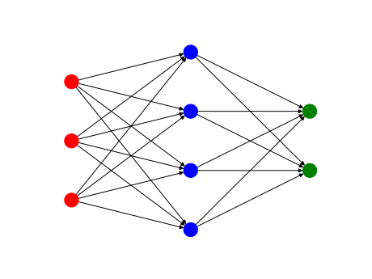

NumNeurNet.nn module¶
-
class
NumNeurNet.nn.MLP¶ Bases:
object-
addLayer(layer)¶ Add a new layer to the NN.
-
backpropagate(output)¶ This is a vectorized backpropagation routine.
Since we work with mini bacthes (see: feedforward), the gradient of the loss function and the derivative of the activation function σ are being applied to the columns of the matrices.
Backpropagation:
Compute the output error:
\[\delta^L = \nabla_{NN} \text{Loss} \odot \sigma'(z^L)\]Backpropagate:
\[\begin{split}\begin{align*} &\text{for } l \in \{ L-1, \dots, 1\}\\ &\qquad \delta^l = \left((W^l)^T \delta^{l+1} \right) \odot \sigma'(z^l) \end{align*}\end{split}\]
-
feedforward(input)¶ This is a vectorized forward propagation routine.
Instead of a single input vector, the MLP receives a mini batch of input vectors and identifies them as columns of the matrix. Consequently we work with a bias matrix \(\tilde{b}\), where each column is the same bias vector \(b\). The activation function σ is being applied column wise.
Forward propagation:
\[\begin{split}\begin{align*} &a^0 = \text{input} \\ &\text{for } l \in \{ 1, \dots, L\}\\ &\qquad z^l = W^l a^{l-1} + \tilde{b}^l \\ &\qquad a^l = \sigma(z^l) \end{align*}\end{split}\]
-
getAccuracy(label)¶
-
getGraph()¶ Compute the graph object representing the neural network.
-
getGraphFigure(title='Multi Layer Perceptron (MLP)')¶ Return a Matplotlib figure of the graph of the network’s architecture.
-
getLoss(label)¶
-
load(name)¶
-
plotGraph(title='Multi Layer Perceptron (MLP)')¶ Plot the graph of the network’s architecure.
-
predict(input)¶ Forward propgate the input through the NN and output the activations of the last layer.
-
save(name)¶
-
train(dataset, loss=<loss.MSE object>, epochs=1, metrics=['train_loss', 'test_loss'], tensorboard=False, callbacks={}, autoencoder=False, noise=None)¶
-
validate(test, ind, callbacks, writer=None, metrics=['train_loss', 'test_loss'])¶
-